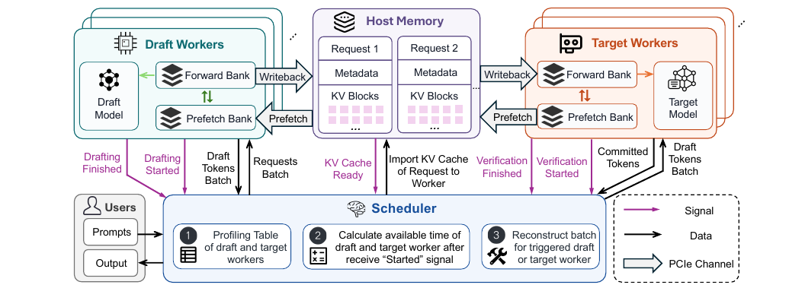
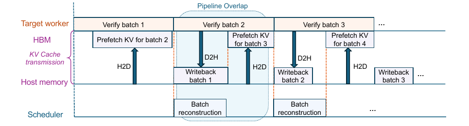
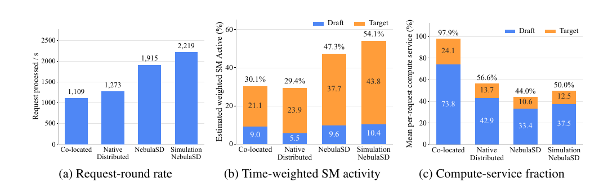
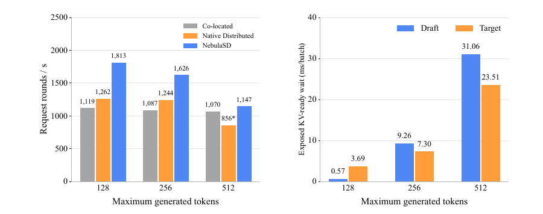
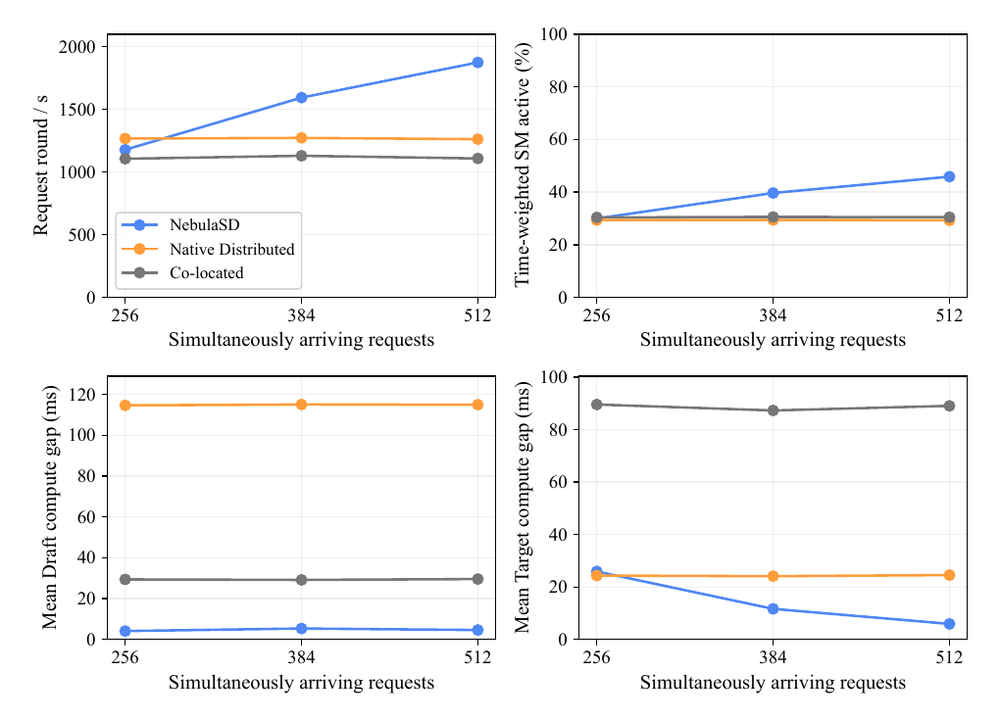

NebulaSD: Many-for-Many Speculative Decoding
NebulaSD 把推測式解碼（speculative decoding）的 draft 與 target 階段，從固定成對的執行單元改造成可獨立排程的多對多工作池。它讓空閒 worker 主動從共享請求池重組下一批，並把 HostKV、雙 KV bank 與非同步搬移放進同一條準備管線；四張 RTX 4090 上的 request-round rate 因而比固定配對的分離式基線高 50.4%，但這個數字不是 token throughput，且增益會隨 KV 狀態成長而快速收斂。
真正的貢獻不是「把 draft 與 target 放到不同 GPU」，而是把跨階段固定關係改寫成兩個可共享容量的服務池，再處理這個自由度必然引入的狀態搬移成本。
文章目錄
讀懂多對多之前，只需要哪三個概念？
理解障礙不是推測式解碼本身，而是：一個請求為何會在兩種模型間反覆切換、兩種模型為何不適合同一批次，以及移動請求時究竟要搬什麼。以下三個概念會在後文一一回收。
一輪推測式解碼不是一個 kernel，而是兩階段接力
draft model 先連續提出最多 \(d\) 個候選 token，target model 再用一次 forward 平行驗證；被接受的前綴才成為正式輸出，下一輪又回到 draft。對請求 \(r\) 的第 \(q\) 輪，依賴關係可寫成 \(\mathrm{draft}_r^q \prec \mathrm{target}_r^q \prec \mathrm{draft}_r^{q+1}\)。因此系統吞吐由兩階段中較慢的一側限制，而不是只看較小的 draft model。§1、§4 · PDF pp.1–5 · Eq. 1–3
小模型與大模型喜歡的 batch 並不對稱
在作者的 Qwen3 profiling 中，draft 階段從 batch 1 增加到 512 時，單次 forward 約維持 16–18 ms，SM Active 卻從約 9.1% 升至 86.8%；target 階段在 batch 32 已達約 87.5% SM Active，再增至 64、128 時延遲由約 28.8 ms 升到 46.3、82.8 ms。實驗事實draft 有很大的聚批空間，target 則更早進入延遲代價陡升區；把同一批請求綁著跨階段走，會同時犧牲兩邊的甜蜜點。Appendix C · PDF pp.14–15 · Fig. 6
移動請求，其實是在移動持續長大的 KV 狀態
每個 autoregressive 請求在 draft 與 target 模型各有一份鍵值快取（key-value cache, KV cache）。狀態通常以不連續的 page/block 儲存，而且每輪幾乎只追加新 suffix；因此跨 worker 執行不是搬一塊連續 tensor，而是要找 block map、配置目的地、重建 metadata，再傳送正確版本。§3 · PDF pp.3–4
分析這三點串起全文：兩階段依賴要求正確性，批次不對稱提供共享容量的收益，而 KV 狀態則決定這個自由度要付多少資料移動成本。
接下來的問題是：既然 physical disaggregation 已把兩階段拆開，為何仍然不夠？
固定配對為何讓快的一側陪慢的一側等？
論文針對的不是「draft 與 target 是否在不同裝置」，而是拆開之後是否還保留 request、worker 或 batch affinity。只要一組 draft worker 仍只能餵給固定 target，局部慢端就會決定那一對的速度，其他配對的閒置容量也無法借用。
症狀：有空閒 GPU，系統卻沒有可立即執行的批次
在固定一對一（或保留跨階段 batch affinity）的設計裡，某個 draft worker 可能已完成，而對應 target 還在忙；另一組 target 可能閒著，卻不能接走這批請求。兩階段不同的 batch scaling 使這種局部容量錯配長期存在，整體速率被每一對的局部瓶頸切碎。§1 · PDF pp.1–2
單純 physical disaggregation 只讓兩階段可以分別配置硬體，並不自動提供跨 worker、跨 batch 的全域容量共享。§1 · PDF p.2
最近方法解了不同問題，沒有把兩側都變成共享池
SLED、WISP 著重 edge draft 與集中式 verification；DSD 控制 edge–cloud speculation window；SPECTRE 借用低負載模型服務做 remote drafting；Disaggregated SD 則重用異質 GPU。作者將自己的問題定位為：假設 draft／target 已分離，如何在多請求反覆交替時，讓兩側都能重新組批與共享容量。§2、Appendix B · PDF pp.2–3、12–14 · Table 2
解除 affinity 後，新瓶頸會轉成狀態可用性
若第 \(q\) 輪由 worker A 執行、下一輪改派 worker B，B 必須在執行前取得正確 KV 版本。等派工完成才開始搬，會把 H2D migration 放進關鍵路徑；太早預搬則可能搬錯目的地、浪費頻寬，甚至干擾前景 compute。這讓排程不再只問「哪張卡有空」，還要同時問 predecessor output、目的 worker 與 KV state 何時 ready。§1、§4 · PDF pp.2、5–6
由瓶頸推導出的四個要求
R1 · Pooling
draft 與 target 必須各自形成可獨立配置與排程的 worker pool。
R2 · Rebatching
每一階段都要依自己的效率與 ready time 重組 worker-local batch，而不是沿用上一階段的分組。
R3 · Look-ahead state
在 predecessor 尚未完成時，就根據預測完成時間安排下一批並啟動 KV 準備。
R4 · Runtime safety
預測只用來提前準備；真正 RUN 必須等 input、KV 與 worker 三者皆由 runtime 確認。
這四個要求看似是一套複雜排程器；用一個六請求例子，會更容易看出它其實在做什麼。
把一次請求送進兩個共享池，會發生什麼？
最小心智模型是「兩條不同速度的共享加工線」：請求不是綁定一對機器，而是在 draft 線完成後進入 target 等候池，下一次再回到 draft 池。每台空閒機器從自己的池裡挑出一批時間相容、狀態來得及準備的工作。
{kind=link}

六個請求的小例子
假設 draft worker \(d_0\) 正在處理 \(B_D=\{r_1,r_2,r_3,r_4,r_5,r_6\}\)，而 target worker \(t_0\) 的 bank A 還在驗證舊批次。雖然 \(r_1\) 到 \(r_6\) 的 proposal 尚未產生，scheduler 已可根據 draft 的預測完成時間，替 \(t_0\) 的待命 bank B 選出 \(B_Y=\{r_1,r_2,r_3,r_4\}\)；\(r_5,r_6\) 不必跟著原 batch，可留給別的 target worker。Appendix F.1 · PDF pp.20–21
bank B 先從 HostKV 載入「已提交 token」對應的 target KV，因為這部分不依賴本輪尚未完成的 proposal。之後三個事件可以任意先後到達：bank A 退役、H2D 完成、draft 發布 proposal；只有三者都 ready，\(B_Y\) 才執行。分析這裡的 look-ahead 並不是冒險執行未完成的依賴，而是把可提前確定的資料搬移和必須等真實事件的執行拆開。
{kind=link}

比喻在哪裡失準？
加工線比喻容易忽略兩件事。第一，draft 與 target 並非一次通過，而是每輪交替，且 target 的接受結果會改變下一輪有效序列長度；第二，KV 不只是可任意搬運的工件，它有模型別、版本與 block layout，舊版本或被覆寫的 bank 會直接破壞正確性。因此 NebulaSD 還需要 epoch、version、operation fence 與 bank state machine。Appendix E · PDF pp.17–19
直覺建立後，可以把它還原成排程公式與 runtime 機制：先選批、先 PREPARE，最後由三道 readiness 閘門決定 RUN。
NebulaSD 如何先搬狀態、再等三道閘門放行？
方法可分成三層：用 stage capacity 決定資源比例；在每次 worker opportunity 重組下一批；用 HostKV、雙 bank 與隔離式 DMA runtime 把狀態準備移出 compute 關鍵路徑。
一、把兩階段當成各自有服務率的 pool
對 stage \(s\in\{D,T\}\) 的 batch \(B\)，profiling table 給出執行時間 \(\hat T_s(B)=\phi_s(z_B)\)，其中 \(z_B\) 包含 batch size、context length 與 proposal depth。作者以
\(\hat T_s(B)\) 是該 stage 一批的預測秒數，\(\mu_s\) 是 request-round／秒的近似服務率；兩階段每輪都必須走過，因此總體不可能快過較慢 pool。這個式子用來說明配置原則，不是完整 queueing model。§4 · PDF pp.4–5 · Eq. 2–3
二、由空出準備容量的 worker 觸發重組
目的 worker \(w\) 在 scheduling opportunity 出現時已確定；scheduler 從對應 stage 的 eligible pool 選 request。對每個 request \(r\)，若 predecessor 已完成便使用實際完成時間 \(e_r\)，否則用 profiling 預測 \(\hat e_r=t_{\text{start}}+\phi_{\bar s}(z)\)。destination worker 的可用時間為 \(\hat a_w\)，KV 抵達時間為 \(\hat k_r(w)\)。因此候選 batch 最早可啟動時間是：
三項依序是 worker、predecessor output 與 KV state；任何一項未 ready，batch 就不能 RUN。§4 · PDF pp.5–6 · Eq. 4–6
為避免追求大 batch 而餓死等待中的 request，每個 stage 設目標 service interval \(g_s\) 與 slack \(\Delta_s\)。候選 request 的 admission bound 是 \(\hat d_r(w)=\max\{\tilde e_r+g_s,\hat S(\{r\},w)\}+\Delta_s\)；batch 除了不能超過 \(B_{\max}\) 與實體容量，也必須滿足 \(\hat S(B,w)\le\min_{r\in B}\hat d_r(w)\)。線上實作以 predecessor readiness、等待時間與 temporal compatibility 排序，再貪婪加入符合約束的 request，避免做昂貴 subset search。§4 · PDF p.6 · Eq. 7–8、Algorithm 1
三、PREPARE 固定批次，RUN 只做 readiness 檢查
worker exposes standby-bank capacity
→ rank eligible requests
→ freeze batch membership and destination bank
→ PREPARE: allocate layout + H2D KV state
→ wait until INPUT_READY ∧ KV_READY ∧ WORKER_READY
→ RUN
→ append-only D2H writeback of the new KV suffixplanning path 只在新 request 或準備容量改變時執行；H2D 完成、前驅結果發布、compute capacity 恢復等 progress event，只檢查已凍結 batch 的 readiness，不重新選批。這避免同一批在每個事件都重跑排程。Appendix F.1–F.3 · PDF pp.19–22
四、用持久 HostKV 與雙 bank 讓狀態跟得上排程
每個 request 在 pinned shared-memory arena 內保留固定 HostKV extent；runtime 只 D2H write back 尚未持久化的新 suffix，避免重傳不變 prefix。每個 worker 有兩個 GPU KV bank，狀態依 FREE → FILLING → READY → COMPUTING → EXPORTING → FREE 推進；一個 bank compute 時，另一個可 H2D 下一批或 D2H 上一批。§5、Appendix E.1–E.2 · PDF pp.7、17
logical worker 又拆成 control、execution、DMA 三個 process，使 Python/control-plane 活動與大筆 copy submission 不共用 latency-sensitive 執行程序。H2D 以預設 32 MiB window 分塊送出，避免待命 bank 的長 H2D queue 阻塞另一 bank 的 D2H。Appendix D、E.4–E.5 · PDF pp.15–19 · Fig. 7–9
方法的因果鏈很完整：pooling 製造重新派工自由度；batch reconstruction 把自由度轉成較少 idle gap；HostKV／雙 bank／隔離 DMA 則盡量不讓狀態成本吃掉這份收益。
但這條因果鏈要成立，實驗必須證明收益不是單純來自更大的 batch，也必須揭露 KV 搬移何時會反噬。
增益來自消除空洞，還是只是換了批次大小？
作者用四張 RTX 4090 的真機實驗回答「現在能否更快」，再用 microbenchmark、敏感度分析與理想化 simulation 拆解「為何更快、何時失效、理論上能否放大」。最強證據是 worker gap，而不是 headline speedup 本身。
主張一：多對多 pooling 在相同四 GPU 預算下提高處理率
設定。Qwen3-0.6B draft、Qwen3-8B target、proposal depth 4、512 個同時到達請求、最大生成長度 128。Co-located 在每張 GPU 放一組 D+T；Native Distributed 與 NebulaSD 都是 2D+2T，draft／target batch 上限為 128／32，差別是 Native 保留跨階段 batch affinity。指標 request-round rate 計算每秒完成多少次「draft + target verification」。§6 · PDF p.7
實驗事實NebulaSD 達 1914.83 rounds/s，高於 Native 的 1273.35（+50.4%）與 Co-located 的 1109.37（+72.6%）；time-weighted SM activity 由 29.4%／30.1% 升至 47.3%。§6.1 · PDF p.8 · Fig. 4、Table 1
{kind=link}

限制。這是 round throughput，不等於 accepted tokens/s，也沒有呈現 TTFT、TPOT 或端到端 latency；因此它支持「serving pipeline 每秒完成更多輪」，不能直接推出「使用者每秒看到更多正確 token」。
主張二：收益主要來自縮短執行空洞，而非讓單批 compute 更快
Native 與 NebulaSD 的 target 平均 batch 幾乎相同（32.00 vs. 31.32），verification time 也接近（27.51 vs. 28.15 ms）；draft time 同樣接近（87.21 vs. 87.72 ms），而 NebulaSD 的 draft 平均 batch 反而較小（89.24 vs. 128）。真正劇烈改變的是 gap：draft 由 114.96 ms 降到 4.38 ms，target 由 24.03 ms 降到 4.45 ms；compute rate 分別由 42.90%／54.67% 升至 95.28%／86.34%。實驗事實§6.1 · PDF p.8 · Table 1
| 指標 | Native Distributed | NebulaSD | 讀法 |
|---|---|---|---|
| Draft avg. batch | 128.00 | 89.24 | 不是靠更大的 draft batch |
| Target avg. batch | 32.00 | 31.32 | target 工作量近似 |
| Draft mean gap | 114.96 ms | 4.38 ms | 共享池消除局部飢餓 |
| Target mean gap | 24.03 ms | 4.45 ms | look-ahead 準備減少等待 |
分析這組對照與論文機制最對齊：compute kernel 時間沒有改善，速度來自把原本的 idle GPU-time 轉成可執行 batch。理想模擬仍達 2218.67 rounds/s，與真機差距則量化了 migration、event timing、scheduler 與 prediction mismatch 尚未隱藏的 orchestration overhead。
主張三：KV 搬移可藏在 compute 後面，但序列變長會把它重新推回關鍵路徑
最大生成長度 128／256 時，NebulaSD 相對 Native 高 43.7%／30.7%；到 512 時，NebulaSD 為 1146.78 rounds/s，只比 Co-located 的 1070.41 高 7.1%，而 Native 因原始 resident configuration 超出 target GPU memory，改用每 pair 64 個 resident request，已不能做等配置比較。Appendix G.1 · PDF pp.22–24 · Fig. 10
{kind=link}

H2D/batch 同時由 690.65／307.50 MiB 增至 1837.07／911.24 MiB，observed effective H2D rate 降到 13.42／14.34 GB/s。作者謹慎指出這個 rate 包含 chunk submission、同步與 copy-path contention，不能直接解讀為 PCIe 實體峰值。實驗事實Appendix G.1 · PDF pp.23–24 · Table 3
主張四：pooling 的收益依賴足夠高的併發度
同一套 scheduler 參數下，256 個同時到達 request 時，Native 略快於 NebulaSD；到 384 與 512 時，NebulaSD 分別約快 25% 與 49%。隨 request pool 變大，target compute gap 由 25.9 ms 降至 11.7、5.9 ms，表示收益來自更大的可選 request 集合，而不只是更多 outstanding work。Appendix G.3 · PDF pp.25–26 · Fig. 11
{kind=link}

分析這是論文最重要的反例：NebulaSD 不是無條件優於固定配對。pooling 要先有足夠多、時間相容的 request，才有機會用重組換掉 idle gap。
主張五：鄰近設定下具韌性；大規模只證明 compute-side 潛力
proposal depth 3／4／5 時，NebulaSD 對 Native 分別為 1.31×／1.48×／1.46×；調整 service interval 與 slack 後，rate 皆在預設值的 1.05% 內；把 draft 換成 Qwen3-1.7B，仍比 Native 高 1.45×。Appendix G.2、G.4 · PDF pp.24–26 · Table 4–5
大規模 discrete-event simulation 在 19 到 192 GPU 間呈近比例 compute capacity scaling，例如 152 GPU 的採樣 operating point 為 86.06% SM activity、99.61% service fraction、139,264 rounds/s。然而 simulation 明確令跨裝置 state-transfer latency 為零，省略 PCIe／network contention、IPC、kernel-launch jitter 與 GPU-memory fragmentation；它只能說明 batch reconstruction 沒有內建 compute-side scaling bottleneck。§6.2、Appendix H · PDF pp.9、27–29 · Fig. 5、12、Table 6
證據因此支持一個有條件的結論：高併發、短至中等 KV 狀態下，多對多確實能把固定 affinity 的 idle gap 轉成工作；超出這個區域，資料移動與服務公平性會重新主導。
證據能支持多對多，卻還不能支持什麼？
論文的優點是把「容量碎片 → 重組批次 → 狀態提前準備 → idle gap 下降」連成可測的因果鏈，並主動揭露 KV 成長與低併發失效區。它的主要不足，不在機制是否運作，而在效益指標、工作負載與規模外推仍離 production SLO 有距離。
強項：機制證據與負面結果都具可讀性
- 同預算、同 2D+2T 配置：Native 與 NebulaSD 的差異集中在 affinity、pooling、migration 與 early preparation，對主張有直接辨識力。§6 · PDF p.7
- 不只報 throughput：Table 1 同時報 batch、compute time、gap、compute rate 與 SM activity，讓「填補 bubble」可被驗證。§6.1 · PDF p.8
- 揭露反例：256-request 時不贏、512-token KV 時優勢縮小，避免把 pooling 描述成普遍支配策略。Appendix G.1、G.3 · PDF pp.22–26
- 微基準解釋實作選擇：1024 MiB D2H 與 foreground compute 同 process 時，draft／target slowdown 達 28.47%／46.13%；process isolation 後降至 2.05%／3.07%，Nsight 又顯示主要是小型 readback 被大 transfer head-of-line 阻塞，而非 kernel 本身等比例變慢。Appendix D · PDF pp.15–16 · Fig. 7
限制一：request-round rate 沒有封閉使用者價值鏈
一輪可能接受 0 到 (d) 個 token；draft model、proposal depth 與 workload 都會改變 acceptance length。論文刻意用 round rate 隔離 serving-side capacity，這對研究機制合理，但沒有同步報 accepted tokens/s、TTFT、TPOT、P95/P99 latency、output quality 或 request completion time。分析因此 50.4%／72.6% 不是使用者可直接感知的加速比，甚至 Figure 4 已顯示每 request 的 compute-service fraction 降至 44.0%。
限制二：真機 workload 太規整，最適合 shared-pool 重組
512 requests 同時到達、相同最大生成長度、固定 model pair 與 proposal depth，會提供大量 temporal compatibility。論文未提供 production arrival traces、混合 prompt／generation length、prefix hit、取消、priority、multi-tenant fairness 或 bursty SLO 的真機結果；這些因素都可能縮小 eligible set，或使 waiting-time aging 與 migration cost 競爭。
限制三：缺少端到端元件消融與強基線重現
Appendix 對 process isolation、migration interference、scheduler 參數與 KV 長度提供了敏感度，但沒有在同一端到端配置逐一關閉 worker-triggered rebatching、early planning、incremental writeback、double buffering、process isolation 與 H2D chunking。Native Distributed 是作者定義的固定-affinity 實作；SLED、WISP、DSD、SPECTRE 等最接近系統只做概念定位，未在相同硬體與 workload 重現。分析因此我們知道「整套堆疊有效」，還不能準確分攤每個元件的必要性與增益。
限制四：多節點 scaling 尚未面對網路
真機只有四張 RTX 4090；論文未提供 CPU、host memory、PCIe topology、CUDA／driver 版本、SwiftLLM commit 或跨節點 transport。192-GPU simulation 省略 state-transfer latency 與 contention，恰好移除了本論文在 512-token 實驗已證明最先惡化的成本。推測若擴展到 RDMA 多節點，NIC oversubscription、rail placement、HostKV location 與 concurrent H2D/D2H/RDMA 的 backpressure 很可能成為新的 batch-admission 約束，而不能只用 worker ready time 表示。
最穩健的結論是：「多對多是高併發 speculative serving 的有效排程抽象，且四 GPU prototype 已證明可實作」；不是「已證明可線性擴展到大型多節點 production cluster」。
下一步不只是把 worker 數量放大，而是把網路、SLO 與狀態成本直接放進排程目標。
若走向多節點與真實流量，設計還缺哪一塊？
NebulaSD 最可重用的觀念，是把「計算機會」與「狀態準備機會」分開建模。要把它推進 production，下一版 scheduler 應從 compute-ready 擴充為 SLO、網路與狀態共同決策。
可延伸的四個方向
Network-aware admission
推測把 KV-ready 預測拆成 HostKV location、NIC/PCIe/NVLink path、queue depth 與 contention；必要時允許就近執行而不是全域最佳 batch，避免為了計算效率製造網路熱點。
SLO-goodput objective
推測以 deadline miss、TTFT／TPOT、accepted tokens/s 與 cost 為目標，讓 service interval 與 slack 由 request class 自適應，而不只控制 stage service interval。
Move, copy, or recompute
推測當 KV 很大時，scheduler 不應只選目的 worker；還應在 migration、短期 replication、prefix-store reuse 與 selective recomputation 間選擇最低 critical-path cost。
Closed-loop pool sizing
推測用 online service curves 估計 draft／target capacity，在 model mix、acceptance rate 與 context 分布改變時動態調整兩個 pool，避免固定 2D+2T 在負載漂移後失衡。
最值得補的實驗
- 使用 arrival trace 與混合 prompt／output lengths，報 P50/P95/P99 TTFT、TPOT、E2E latency、accepted tokens/s 與 SLO-goodput。
- 在相同 runtime 逐一關閉 rebatching、early PREPARE、incremental writeback、double bank、process isolation、32 MiB H2D window，建立元件因果分解。
- 跨 2–8 節點比較 PCIe、NVLink/NVSwitch、InfiniBand/RoCE，將 state bytes、NIC utilization 與 exposed KV wait 一起報告。
- 測試 cancellation、priority inversion、tenant fairness、burst 與低併發，確認 aging 與 reservation 不會讓尾端請求惡化。
- 與可動態 migration 的 general LLM scheduler、代表性 distributed speculative decoding system 在同一硬體重現比較。
研究組討論題
- 若 round acceptance length 很低，最高 rounds/s 是否仍是正確的 pool-sizing 訊號？
- 在多節點環境，應優先重組 batch，還是維持 state locality？兩者的 break-even point 如何在線估計？
- HostKV 是共享池的必要基礎，還是可用 GPU-to-GPU direct transfer／分散式 KV store 取代？
- prepared batch 被 freeze 後，若出現更急迫 request，應取消重組還是保留確定性？取消成本如何計入？
- 能否把 draft acceptance prediction 與 target batch formation 聯合最佳化，而不是只依 ready time 與 service interval？
最後一節整理書目、術語與原文定位，方便回到證據本身。
如何定位術語、數字與原文證據？
書目與分類
Junhao He、Hongyang Du。“NebulaSD: Many-for-Many Speculative Decoding.” arXiv:2609.29364v1 [cs.NI]，2026-09-24。論文標示為 preprint，未提供正式會議或期刊資訊。arXiv 論文頁面。
分析分類：LLM Systems / Speculative Decoding。主要貢獻是 speculative decoding serving 的多對多 worker-pool abstraction、batch reconstruction 與 KV state preparation；network／PCIe 是使該抽象可運作的成本與邊界，而非一個新的傳輸協定。
共 29 頁
術語速查
- Draft worker
- 執行小型 draft model、產生候選 token 的 worker。
- Target worker
- 執行大模型，一次驗證一段 proposal 的 worker。
- M-for-N
- \(M\) 個 draft workers 與 \(N\) 個 target workers 各自形成共享 pool，不保留固定 pair。
- Request round
- 一個 request 完成一次 draft 再完成 target verification；不是固定數量的 accepted tokens。
- HostKV
- 存放 draft／target KV 狀態的 pinned host-memory arena，供任一對應 worker 預取。
- Worker-triggered reconstruction
- 由特定 worker 的準備機會觸發，從共享 pool 組出該 worker 下一批。
- Compute-service fraction
- 觀察窗內，一個 request 實際獲得 worker compute 的時間比例；併發過高時會下降。
- Exposed KV-ready wait
- input 與 worker 已 ready 之後，仍因 KV preparation 未完成而額外等待的時間。
關鍵證據索引
- 問題與貢獻。固定 affinity 的容量碎片、M-for-N 架構與三項貢獻。§1，PDF pp.1–2。
- 方法與排程。共享 pools、HostKV、stage service rate、三重 ready time 與 admission constraints。§3–4，PDF pp.4–6，Figure 2、Eq. 1–8、Algorithm 1。
- 真機主結果。1914.83 rounds/s、47.3% time-weighted SM activity 與 gap 分解。§6.1，PDF p.8，Figure 4、Table 1。
- KV 搬移干擾。process isolation 對 1024 MiB transfer 的改善與 readback head-of-line 分析。Appendix D，PDF pp.15–16，Figure 7。
- 長序列邊界。KV 成長、H2D/batch 與 exposed wait。Appendix G.1，PDF pp.22–24，Figure 10、Table 3。
- 適用區域與外推邊界。低併發反例、zero-latency migration simulation 與被省略的實體成本。Appendix G.3、H，PDF pp.25–29，Figure 11–12、Table 6。